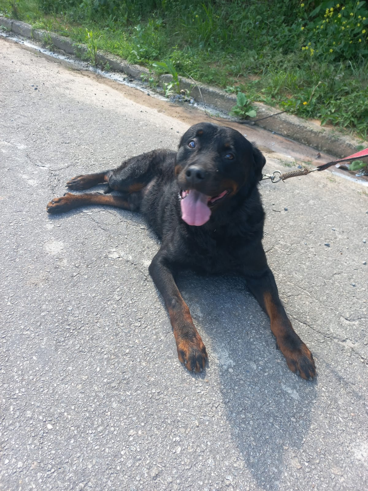
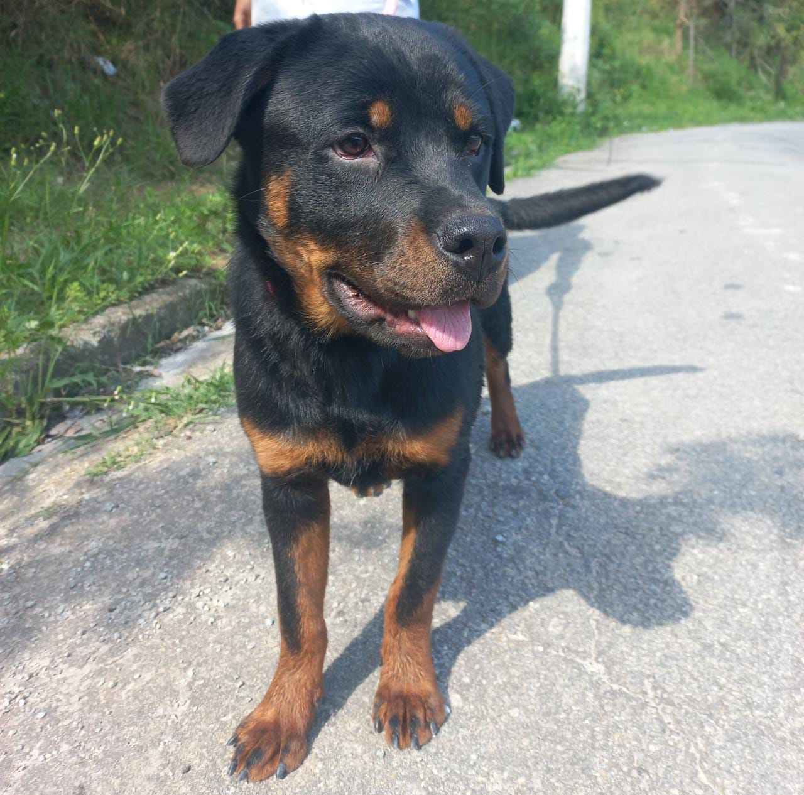

Seu nome não deixa dúvidas: o Husky siberiano surgiu na Sibéria há cerca de dois mil anos. A criação e dispersão da raça é atribuída a uma tribo chamada Chukchi, que utilizava os cachorros para puxarem os trenós. As características físicas do Husky eram ideais para aguentar as longas distâncias, puxar objetos e também suportar o frio da Sibéria. Em 1909 William Goosak, um comerciante de peles, levou os Huskys até o Alasca para participarem da Grande Corrida do Alasca, um percurso de 657 km. Os Huskys impressionaram pelo alto desempenho e começaram a ganhar notoriedade. Mas foi em 1925 que essa raça ganhou reconhecimento mundial. Uma pequena cidade do Alasca chamada “Nome” foi assolada por uma epidemia de difteria, foram grupos de cães, principalmente de Huskys, que levaram soro e medicamentos para essa aldeia enfrentando um inverno rigoroso e acabaram por salvar a população. O episódio ficou conhecido como “Corrida do Soro de Nome” e o Husky Siberiano alcançou seu lugar de destaque. Em 1930 a raça foi reconhecida oficialmente pelo American Kennel Club.
Last updated 3 mins ago

Eles são grandes, fortes e apesar da cara de mau são cães muito amorosos e extremamente apegados aos seus humanos. Trata-se de uma raça muito antiga, afinal os antecessores dos Rottweilers acompanhavam as legiões romanas pelos longos caminhos que percorriam. Uma das paradas obrigatórias dos soldados ficava do sul da Alemanha, um centro comercial e administrativo muito importante que se desenvolveu ainda mais com a presença dos romanos. Os prédios mais importantes receberam telhas vermelhas e a região passou a ser conhecida como Rottwill que significa vila vermelha. Com o tempo, o nome mudou para Rottweil. como é conhecida até hoje. Daí surgiu o nome da raça Rottweiler. Por volta de 250d.c., os romanos foram expulsos da região por tribos locais e muitos dos cães foram deixados para trás, a população passou então a criá-los. O cachorro Rottweiler chegou à América em 1928 e foi registrado pelo American Kennel Club em 1931..
Last updated 3 mins ago

O Buldogue Francês (também chamado de Bulldog Francês) é um dos cachorros de pequeno porte mais populares que existem. A raça de cachorro é ideal se você procura uma companhia que viva bem em apartamentos ou que se dê bem com crianças. Ao mesmo tempo em que é super brincalhão, o Bulldog Francês também pode ser muito tranquilo e te acompanhar nos momentos de relaxamento em casa. Mesmo sendo muito famoso, muita gente tem dúvidas sobre as características do Bulldog Francês, principalmente quando se trata dos cuidados com cachorros braquicefálicos, além de aspectos da personalidade, origem e cuidados que esse doguinho precisa. O Patas da Casa reuniu em uma só matéria tudo sobre Bulldog Francês. Conheça mais um pouco e se apaixone por esse cachorrinho!
Last updated 3 mins ago
Cada raça de cachorro possui necessidades específicas e também são propensas a desenvolver certas doenças. Por isso, antes de escolher uma raça para ter em casa, pesquise muito e entenda todas as características comportamentais e de saúde. Algumas raças possuem propensão para obesidade, por isso os tutores devem redobrar a atenção e evitar petiscos fora de hora. Outras raças são mais propícias às lesões ósseas, por exemplo, exigindo cuidados especiais com pisos muito lisos Além disso, o comportamento muda de uma raça para outra, fazendo com que alguns animais sejam mais adequados para o convívio com crianças, outros não ficam bem sozinhos e existem ainda aqueles que exigem muita atividade física. O tutor precisa conhecer muito bem a raça do seu animal e preparar formas de oferecer mais saúde e bem-estar para ele.
Evitar acidentes também um dos cuidados com cachorros necessários para manter a saúde e o bem-estar. Prepare sua casa ou apartamento antes de receber o animalzinho. Telas podem ser instaladas em janelas e varandas para evitar quedas. Elas também podem ser usadas em portões que dão diretamente para a rua para evitar fugas. Portões para cachorro e cercados são ótimos para limitar o acesso do animal em alguns cômodos, como cozinha ou garagem. Aposte em tapetes para evitar escorregões e lesões em casas com pisos muito lisos. Retire medicamentos e plantas do alcance do animal, eles podem intoxicar o bichinho e levar à óbito.
Cães adultos devem ser vacinados todos os anos com as vacinas V10 ou V8. Elas protegem o cachorro contra cinomose, parvovirose, leptospirose e outras enfermidades graves que podem levar o animal à óbito. Outra vacina que deve ser realizada anualmente é a Antirrábica. Ela imuniza contra a Raiva, uma doença grave que pode ser transmitida para humanos. Além dessas duas aplicações fundamentais para manter os cuidados com cachorros sempre em dia, ainda existem vacinas para verminoses, gripes, entre outras doenças. Consulte um médico veterinário e siga a indicação do protocolo de imunização
Filhotes exigem cuidados especiais dos seus tutores. Entre os mais importantes está o protocolo de vacinação que é diferenciado dos adultos. A vacina V10 ou V8, que protege o cachorro contra cinomose, parvovirose, leptospirose e outras doenças, deve ser aplicada em 3 doses. A primeira por volta dos 60 dias de vida, a segunda entre 81 e 90 dias e a última entre 111 e 120 dias de vida. Além disso, todo filhote deve ser imunizado com uma dose única de Antirrábica. Filhotes podem passear na rua ou ter contato com outros cães apenas após 10 dias da última dose das vacinas, quando estarão completamente protegidos. Após completar 1 ano de idade as vacinas V10/V8 e Antirrábica devem ser repetidas anualmente
Os cães são o nosso elo com o paraíso. Eles não conhecem a maldade, a inveja ou o descontentamento. Sentar-se com um cão ao pé de uma colina numa linda tarde é voltar ao Éden onde ficar sem fazer nada não era tédio, era paz. Milan Kundera
|  |
Satan Goss
|
 |
Malévola: Dona do Mal
|